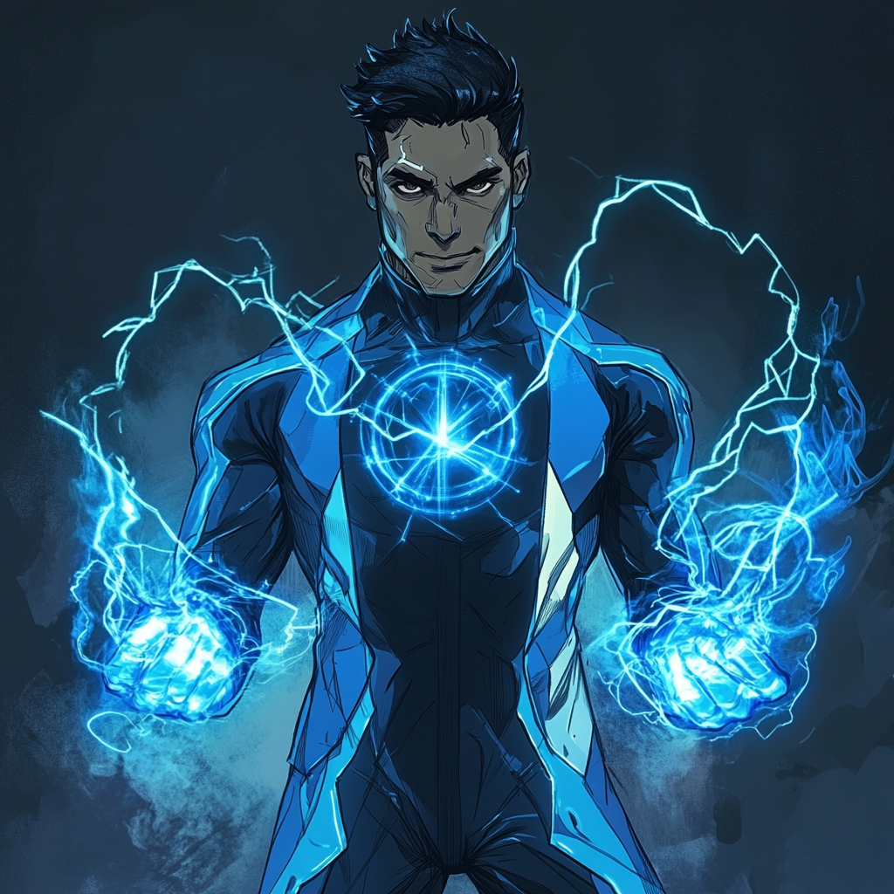

Dr. Quantum: The Quantum Maverick

Academic Ambitions
Mark Sherman blazed through Boston's academic world, earning
his PhD in quantum physics from MIT at 23. His brilliance
came with an ego to match—he treated peer review as a
formality and safety protocols as suggestions. Yet his
insights into quantum field manipulation drew both acclaim
and concern from the scientific community.
The Catalyst
Mark pursued theories others deemed too risky in his private
lab at MIT's Quantum Research Division. He developed
containment fields to trap and manipulate quantum particles,
pushing equipment past design limits. His eidetic memory let
him track countless variables simultaneously, though he
often ignored warning signs.
Late one night, he attempted to merge two containment fields to test his quantum displacement theory. The fields collapsed, releasing a surge of quantum-charged particles. Instead of radiation poisoning, Mark found himself infused with quantum energy.
Power and Particle
The accident transformed Mark's body into a quantum anomaly.
He could generate energy fields at will, teleport through
space, and manipulate the quantum form of reality itself.
His scientific knowledge helped him analyze and control
these abilities through precise mathematical formulas.
His first public display occurred during a lab accident at Harvard. He contained an exploding particle accelerator within an energy barrier, then teleported the overloading core to the bottom of Boston Harbor. The event caught the attention of both the scientific community and the superhero world.
The Academy Calls
Black Panther recognized the potential danger of an
untrained quantum-powered physicist who disregarded safety
protocols. She offered Mark a place at the Boston Avengers
Academy, appealing to his scientific curiosity about other
enhanced individuals.
At BAA, Mark's arrogance clashed with traditional training methods. He preferred analyzing powers through scientific observation, often interrupting combat exercises to propose theoretical improvements to his teammates' abilities.
The Modern Maverick
Now, Mark splits his time between BAA training and his
quantum research lab. He approaches heroics like scientific
experiments, documenting encounters and analyzing
effectiveness rates. His teammates tolerate his attitude
because his powers and scientific expertise prove invaluable
in technical crises.
He's developed a reputation for stopping technological disasters while lecturing the perpetrators on their scientific errors. His containment fields have prevented several catastrophic lab accidents across Boston's research institutions. He conducts authorized power-analysis experiments at BAA's facilities when not on missions.
Despite his abrasive personality, Mark has found an unexpected niche in the superhero community. His deep understanding of quantum mechanics helps him innovate new applications for his powers. He may needle his teammates about inefficient power usage, but he's always ready to provide technical solutions to complex problems.
His quarters at BAA double as a research space, filled with monitoring equipment and quantum field sensors. He maintains detailed records of power interactions and energy signatures, building a database of enhanced ability analysis. While his methods remain unorthodox, even his critics admit that his scientific approach to heroics yields results.
The emergence of his powers has only reinforced Mark's conviction that he knows best. Yet his time at the Academy has begun to teach him that not every problem has a purely scientific solution. As Dr. Quantum, he continues to push the boundaries of quantum physics while learning to be part of something bigger than his brilliance.